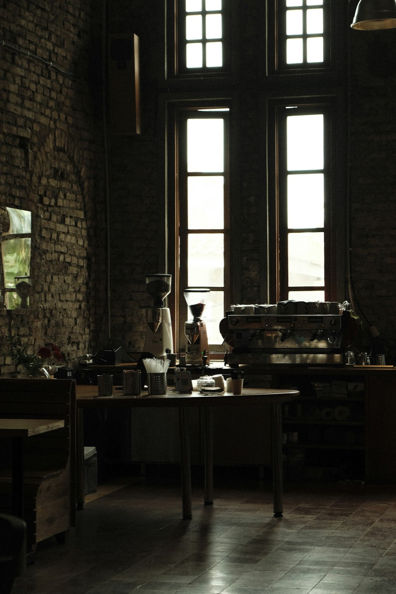

El problema
Pedidos y recojo en el mismo punto: la barra se colapsaba a las 8 a. m.
Lo que decidimos
- Punto 01: Barra partida: pedido y recojo.
- Punto 02: Repisa de pie hacia la ventana.
- Punto 03: Mesas solo al fondo.
Materiales propuestos
- Frente de barra en ladrillo
- Tablero de granito en pedidos
- Repisa de madera maciza hacia la ventana
- Luz cálida de 3000 K
Qué haríamos distinto
Haríamos la repisa de la ventana 10 cm más profunda: en una cafetería de paso, la gente también la usa para trabajar.